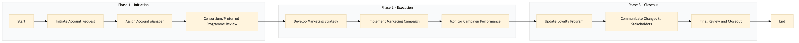

| Role | Steps |
|---|---|
| Sales Manager | 1.1 1.2 3.3 |
| Revenue Manager | 1.3 |
| Marketing Manager | 2.1 2.3 |
| Marketing Specialist | 2.2 |
| Loyalty Manager | 3.1 |
| Account Manager | 3.2 |
| Step | Name | Role | System | Input | Output | KPI | Dec? | Exc? | Pain Point / Risk |
|---|---|---|---|---|---|---|---|---|---|
| 1.1 | Initiate Account Request | Sales Manager | Oracle OPERA Cloud | Account request form | Account request registered in Oracle OPERA Cloud | Less than 5 minutes | N | Y | Handling incomplete or unclear account request forms |
| 1.2 | Assign Account Manager | Sales Manager | Oracle OPERA Cloud | Account request registered in Oracle OPERA Cloud | Assigned Account Manager noted in Oracle OPERA Cloud | Less than 2 minutes | N | Y | Ensuring the right Account Manager is assigned based on expertise and availability |
| 1.3 | Consortium/Preferred Programme Review | Revenue Manager | IDeaS G3 RMS | Assigned Account Manager noted in Oracle OPERA Cloud | Review report and recommendations | Less than 10 minutes | Y | N | Accurately assessing the financial impact of new accounts |
| 2.1 | Develop Marketing Strategy | Marketing Manager | Microsoft Power BI | Review report and recommendations | Marketing strategy document | Less than 30 minutes | N | Y | Creating a compelling marketing strategy that aligns with the hotel's brand |
| 2.2 | Implement Marketing Campaign | Marketing Specialist | Salesforce | Marketing strategy document | Campaign launched and tracked in Salesforce | Less than 1 hour | N | Y | Ensuring the campaign reaches the target audience effectively |
| 2.3 | Monitor Campaign Performance | Marketing Manager | Salesforce | Campaign launched and tracked in Salesforce | Performance report | Daily | Y | N | Interpreting campaign data to make real-time adjustments |
| 3.1 | Update Loyalty Program | Loyalty Manager | Marriott Bonvoy CRM | Performance report | Updated loyalty program rules and benefits | Less than 2 hours | N | Y | Balancing rewards with hotel profitability |
| 3.2 | Communicate Changes to Stakeholders | Account Manager | Oracle OPERA Cloud, Email System | Updated loyalty program rules and benefits | Stakeholder communication plan executed | Less than 1 hour | N | Y | Ensuring all stakeholders are informed and onboarded |
| 3.3 | Final Review and Closeout | Sales Manager | Oracle OPERA Cloud | Stakeholder communication plan executed | Account onboarding complete | Less than 1 hour | N | Y | Closing out the process without missing any final steps |
This process manages consortia and preferred programme accounts at a Marriott full-service hotel, ensuring seamless coordination between sales teams, marketing efforts, and loyalty programs.